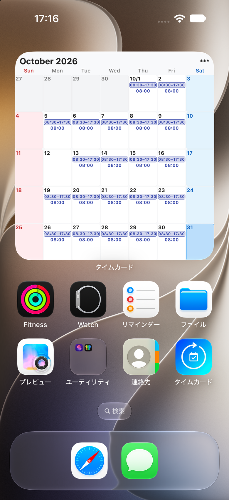
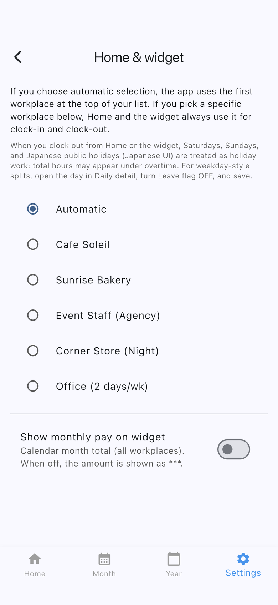

Two widgets
- Punch widget — clock in and out from a Home Screen button.
- Shift calendar — shows this month’s shifts. Tap a day to open it.
Add the shift calendar
- Long-press the Home Screen.
- Choose Shift calendar from the widget gallery and place it.
- Tap a day to open that day for editing.
iPhone and Android
- On iPhone, medium shows this week, including how many days you worked and the total hours.
- On iPhone, large shows this month.
- On Android, the widget shows this month.
The grid is the calendar month. Each day shows a start-to-end time range, and hours worked when the cell has room. Japanese public holiday names appear only when the app language is Japanese.
Planned-only days stay dashed. Estimated pay in the corner uses the same show/hide setting as the punch widget. Hidden pay appears as ***. Pay counts actual times only.

Add the punch widget
- Long-press the Home Screen and add the Time Card punch widget. The steps differ on iPhone and Android.
- In the app, open Settings → Home screen widget. Choose an automatic or fixed workplace, and whether estimated monthly pay is shown.
- Use the widget buttons to clock in or out.
Size and layout follow the operating system. If the widget does not respond, clock in from the Home tab in the app.
